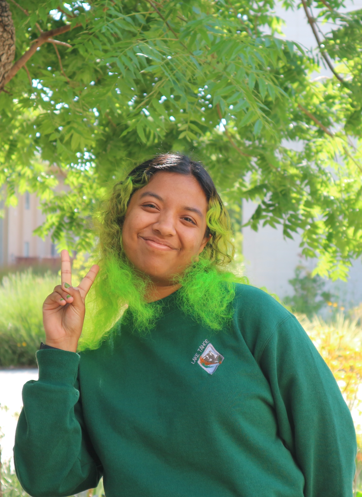

Hi! I’m Zahra
A product designer passionate about using human-centered designA process that prioritizes the needs and experiences of people in every step of the design journey. to create meaningful, interactive experiences.
I’m currently pursuing an MFA in Interactive Design at UC Davis, where my work focuses on using play and interaction to raise awareness about land conservation and environmental stewardship.
I completed my undergraduate studies at UC Berkeley in Human Centered Design, an interdisciplinary major blending design, sociology, psychology, and technology. I also earned a Certificate in Design Innovation, which deepened my understanding of the full lifecycle of bringing ideas to life. While at Berkeley, I helped found the DEI Officer position within the Human Centered Design Club, Berkeley Innovation, to promote greater accessibility within design communities.
To satisfy my concert cravings on a student budget, I worked as an usher at Another Planet Entertainment, a role that introduced me to new music genres and connected me with diverse audiences.
Outside of design, I enjoy creative pursuits like sketching, baking, and photography. I also run a small craft practice called Trinkets by Pickles, where I sell handmade art and goods. Exploring new music and places continues to spark inspiration in my design work.